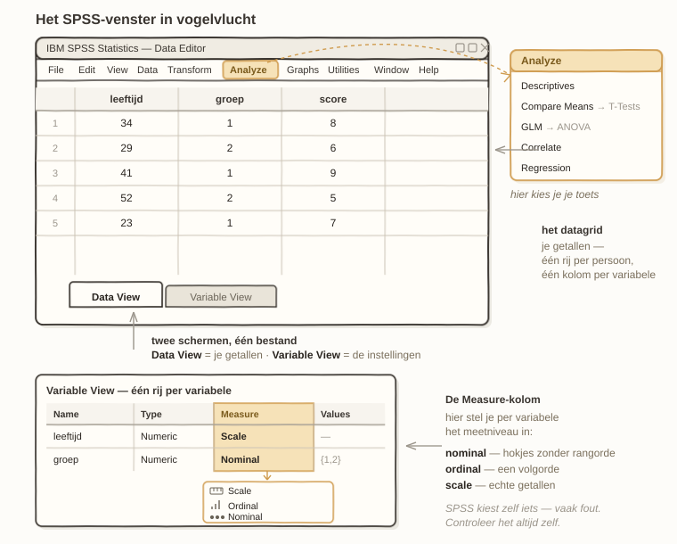

Eerste beweging · Verschil onder de loep
Oefening 0.0 · Installeren & instellen
SPSS klaarzetten · setup
Welkom. Voor je begint, moet SPSS even op je computer staan — en als je nog nooit statistieksoftware hebt geopend: geen zorgen, dat merk je hier aan niks. We doen het rustig, stap voor stap, en je hoeft niks te snappen wat er straks nog uitgelegd wordt. Klaarzetten doe je één keer. Daarna open je het programma en beginnen we samen.
Aan SPSS komen
Even eerlijk vooraf: SPSS is niet gratis. Waar R en JASP een kwestie zijn van downloaden-en-klaar, moet je voor SPSS aan een licentie komen — en die kost geld. Maar bijna niemand betaalt dat zelf. Ben je verbonden aan een opleiding, universiteit of werkgever, dan loopt het meestal via hen: die hebben een licentie waar jij onder valt.
Zo kom je eraan:
- Kijk op de softwarepagina van die instelling (vaak iets als “software voor studenten” of het ICT-portaal). SPSS staat er bijna altijd bij.
- Kom je er niet uit, mail of bel de ICT-helpdesk. “Ik heb SPSS nodig, hoe kom ik daaraan?” is een vraag die ze dagelijks horen — je bent niet de eerste.
- Je krijgt dan een installatiebestand plus een licentiesleutel of een inlog. Volg de instructies die erbij zitten; die verschillen per instelling, en daarom kan dit oefenboek je daar niet exact doorheen loodsen.
Zowel op Mac als op Windows werkt het hetzelfde: bestand downloaden, openen, en de installer volgt de gebruikelijke stappen (volgende, akkoord, klaar). Op de Mac sleep je ’m mogelijk nog naar je Programma’s-map; op Windows klik je een paar keer op Volgende. De licentiesleutel voer je in wanneer het programma daar tijdens of ná de installatie om vraagt.
Staat SPSS eenmaal op je computer, dan dubbelklik je het en zie je een venster verschijnen. Laten we daar even rustig naar kijken, want dat venster is straks je werkplek.
Rondkijken in het SPSS-venster

De eerste keer oogt het misschien druk, maar het zijn eigenlijk maar een paar dingen die ertoe doen. Drie stukken, en dan ken je het.
Het datagrid — je gegevens in een tabel. Het grote geruite vlak in het midden is waar je data woont. Lees het als een gewone tabel: elke rij is één persoon (of dier, of meting), en elke kolom is één ding dat je van die persoon weet — leeftijd, groep, een score. Drie rijen betekent drie personen. Meer is het niet.
Twee tabbladen onderaan — twee schermen, één bestand. Onderin zie je twee tabjes:
- Data View — dit is wat je hierboven ziet: je kale getallen in het grid.
- Variable View — klik daarop en je krijgt een ánder scherm te zien, met nu één rij per variabele (per kolom dus). Hier stel je in wát elke kolom is. Het belangrijkste vakje heet Measure: daar geef je per variabele het meetniveau op. Daar heb je drie smaken:
- Nominal — losse hokjes zonder rangorde (groep, geslacht, kleur);
- Ordinal — een volgorde (zoals “eens / neutraal / oneens”);
- Scale — echte getallen waarmee je rekent (gewicht, leeftijd, een score).
Je springt gerust heen en weer tussen die twee tabbladen — het blijft één en hetzelfde bestand, je kijkt er alleen op twee manieren naar.
Het Analyze-menu — hier kies je een toets. Bovenin de menubalk zit Analyze. Klap je dat open, dan zie je de hele gereedschapskist: gemiddelden, correlaties, regressie, toetsen. Elk hoofdstuk in dit oefenboek wijst je precies naar het juiste menu — je hoeft dus nu niks te onthouden, alleen te weten dat de analyses dáár wonen.
SPSS is behulpzaam bedoeld: bij het inlezen van data raadt het zelf een meetniveau voor elke kolom. Handig — behalve dat het er geregeld naast zit. Een groep die als 1 en 2 in de data staat, ziet SPSS al snel als “echte getallen” (Scale), terwijl het gewoon twee hokjes zijn (Nominal). Reken dus nooit blind op wat SPSS invult: controleer na het inlezen altijd zelf de Measure-kolom in Variable View. Eén blik, en je weet zeker dat SPSS met je variabelen doet wat jíj bedoelt.
Eén ding om op te letten: het decimaalteken
Nog één klein instellings-dingetje, en dan zijn we klaar. SPSS volgt de taalinstelling van je computer. Staat die op Nederlands, dan verwacht SPSS soms een komma als decimaalteken — terwijl de databestanden bij dit oefenboek een punt gebruiken (5.03, niet 5,03). Gaan je getallen na het inlezen raar staan (alles als tekst, of duizendtallen waar kommagetallen horen), dan is dít bijna altijd de boosdoener. Zet in dat geval in het import-venster het decimaalteken expliciet op de punt — één keer goed, en je hebt er verder geen last meer van.
Later pas nodig — PROCESS van Hayes
Twee oefeningen in dit boek (mediatie en moderatie) laten aan het eind zien hoe je dezelfde analyse met PROCESS draait, de macro van Andrew F. Hayes. Dat is een extra, geen vervanging: je rekent het eerst met de hand uit, en pas daarna zet je de macro erop. Installeer hem dus gerust nu, maar je hebt hem de eerste weken niet nodig.
- Ga naar processmacro.org → Download en haal het zip-bestand op. De macro is gratis; de huidige versie is 5.0 (uitgebracht 1 juni 2025) en vraagt SPSS 26 of nieuwer.
- Pak het bestand uit. In de map zitten onder andere
process.sps(de macro zelf) en een custom dialog voor wie liever klikt dan typt. - Wil je het menu-venster: installeer de custom dialog via Extensions → Utilities → Install Custom Dialog. Dat hoef je maar één keer te doen; hij blijft staan als je SPSS afsluit.
- Wil je de syntax gebruiken (dat doen wij): open
process.spsen draai het hele bestand — Run → All. Dit moet elke keer opnieuw als je SPSS opent; de macro zelf blijft niet in het geheugen hangen.
Werkt het? Typ process in een syntaxvenster en draai het: je krijgt een foutmelding over ontbrekende argumenten in plaats van “onbekend commando”. Dat is goed nieuws — hij is er.
Waarom die naam terugkomt. Hayes’ modelnummers zijn de lingua franca van dit vakgebied geworden: “model 4” is mediatie, “model 1” is moderatie. Kom je in een artikel de zin “we used PROCESS model 4 (Hayes, 2022)” tegen, dan weet je nu precies wat er gedaan is — en straks ook hoe je het zelf narekent.
En nu?
Dat was het klaarzetten. SPSS staat, je weet waar je data woont, waar je het meetniveau instelt en waar je een analyse kiest. Meer heb je niet nodig om te beginnen — de rest wijst zich onderweg, oefening voor oefening.
In Oefening 0.1 openen we een echt databestand en gaan we er voor het eerst in rondneuzen. Daar begint het pas leuk te worden.